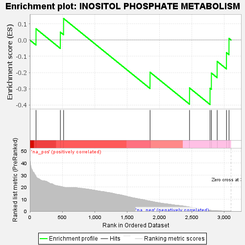
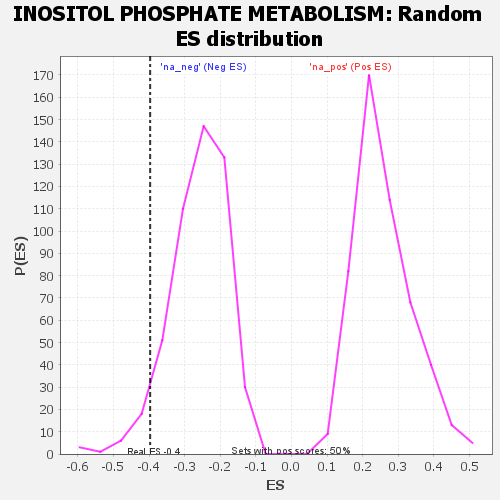

| | | Dataset | GSEA RNK clr Maaslin2 MucosalvsLuminal KO - Colon.rnk |
| Phenotype | NoPhenotypeAvailable |
| Upregulated in class | na_neg |
| GeneSet | INOSITOL PHOSPHATE METABOLISM |
| Enrichment Score (ES) | -0.39674085 |
| Normalized Enrichment Score (NES) | -1.5225916 |
| Nominal p-value | 0.0501002 |
| FDR q-value | 0.17214596 |
| FWER p-Value | 0.964 |
Table: GSEA Results Summary

Fig 1: Enrichment plot: INOSITOL PHOSPHATE METABOLISM
Profile of the Running ES Score & Positions of GeneSet Members on the Rank Ordered List

Fig 2: INOSITOL PHOSPHATE METABOLISM: Random ES distribution
Gene set null distribution of ES for INOSITOL PHOSPHATE METABOLISM